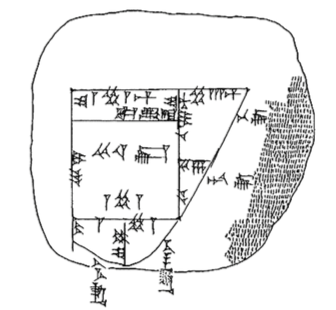

Introduction
Mesopotamian mathematics is interesting to study in relation to the growth of mathematical thinking in human history because it is the first example of “pure” mathematics we have to look at. That is, it is the first example where we have hard evidence that mathematics was performed and taught in its own right: though the math was mostly used for applied purposes, students were being taught mathematical methods in a purely mathematical context and numerate professionals were assembling tables of calculations that could be used for any number of purposes. These tables and methods were, themselves, pure mathematics. Modern pure mathematics more closely resembles what was developed by the Greek mathematicians like Pythagoras and Archimedes who employed a higher level of abstraction and insisted on logic, axioms, and explicit proofs. Mesopotamian mathematics shared very few of these qualities, but much of the intuition that the Greeks formalized came from Mesopotamian minds. For instance, one of the Greeks’ most famous results, the Pythagorean Theorem, was well known to the Mesopotamians and was used in many of their calculations [Hoyrup 1998].
Mesopotamian Geometry
Since most of ancient Mesopotamian mathematics consisted of problems concerning land usage and practical measurements, Mesopotamian geometry and Mesopotamian mathematics were essentially one and the same [Robson 2008]. Even their most algebraic exercises were phrased geometrically: their word for adding two numbers x and y translates to “appending” and the task was then to find the area of the rectangle given by appending the area y rectangle to the area x rectangle [Hoyrup 1996]. It was not, however, a precise, Euclidean style geometry that made a big fuss over metric inconsistencies between shapes, like side lengths. It was a more fluid, topological geometry that tended to stress the intuitive properties of a geometric object. For example, most quadrilaterals were drawn as rectangles with labeled side lengths because all these objects shared the intuitive property of having 4 sides, though they differed in their precisely measured properties like angles. This intuitive approach underlay all of Mesopotamian geometry: their methods were not explicitly proven either because they were never meant to be completely precise or their validity was intuitively self-evident. It would never be necessary to prove or axiomatize the fact that x+y=y+x because appending two rectangles was clearly a symmetric operation, according to one’s spatial intuition.
Surveyors' Methods
Over 30 field plans from the Ur III era have been discovered, and they offer an enormous insight into the Mesopotamian intuition. The drawings give what are most likely very simplistic pictures of the land in question, but this is consistent with the geometric philosophy of the Mesopotamians. Here is an example of a field plan from 2045 BCE, with the front shown first and then the back [Robson 2008]:

The back states that “the land, belonging to the temple of goddess Ninurra in Uma, was measured at the command of the King, Amar-Suen” [Robson 2008]. The shapes drawn are mostly very nice and rectangular, but this is a topological representation of reality, as the cuneiform marks next to the line segments indicate that the “square” in the middle has side lengths 35, 141, 32.5, 141.5, moving counter clockwise and beginning with the left-hand vertical side. The land surveyors who put together these field plans also were responsible for making calculations of area, and they had a formula for this procedure that was known as the surveyors’ method [Hoyrup 2013, Robson 2008]. The method, in calculating the area of a piece of land, was essentially to first assume that the land was a quadrilateral, then to take the leftmost and rightmost horizontal measurements and the lowest and highest vertical measurements, average them respectively, and then multiply them. This method, of course, does not compute the area in question but was probably a good approximation. Moreover, it is intuitively clear that this is a good approximation, and that was good enough for the surveyors.
Boundary-centric Geometry
Perhaps the most interesting thing about the surveyors’ method is that they were performing area calculations as a function of perimeter, rather than cross-field diagonals or angles. The Mesopotamians therefore seemed to group objects that possessed the same boundary properties to match their intuition. Different areas of geometry may be understood as different ways to group objects and equate all the objects in a given group, and so Mesopotamian geometry was the one that grouped shapes by their intuitive boundary properties. The most striking example of their boundary view of planar shapes is an Old Babylonian word problem that calculates the volume of a cylindrical log [Robson 2008]. The solution is given by first calculating the area of a cross-sectional circle. First, the diameter of the circle is measured, then the circumference is approximated by 3 times the diameter, then the area is computed as a function of the circumference. In other words, the method is to use the given information to arrive at a good description of the boundary, and then the calculation is essentially done. Thus the circle is not seen as something generated by a radius but rather a shape that possesses a round boundary. Without the notion of a radius, it doesn’t make much sense to talk about an angle, and so it’s no wonder that they saw quadrilaterals as essentially rectangles. A precise angle would never be of concern to them; the boundary of the shape captured their intuition, and so the boundary of the shape was all there really was.
Cut and Paste "Algebra"
One of the lasting features of Mesopotamian mathematics was their use of the sexagesimal number system in addition to the base-10 (decimal) number system [Robson 2008]. The sexagesimal number system is a place-value system given by base 60 instead of base 10, as we use in most cases. For example, they would write the number 61 as 1,01 since 61=1*60+1*1 and 3822=1*(60*60)+3*(60)+42*(1) would be written as 1,03,42. They probably used a sexagesimal number system because they were often dealing with very large numbers in land survey problems and 60 is divisible by the first 6 positive numbers [Robson 2008]. This number system of course lives on today in the way we tell time and measure degrees. Because powers of sixty give very round numbers in this system (they are 1,00; 1,00,00; 1,00,00,00; and so on), it was often of use to compute the reciprocal of a number: that is, for a number x, find y, such that x*y is a power of 60. The methods by which they performed such computations involved doing algebra by representing numbers as rectangles, and then cutting and pasting them together. The geometry then made the methods so clear that they didn’t need to be proven; the proof was built into the intuition.
An Example: Reciprocals
On a tablet from Nippur, a scribe describes to his student the solution for a reciprocal problem [Robson 2008]. The text translates to:
“What is the reciprocal of 17;46 40? You, in your proceeding: solve the reciprocal of 0;06 40. You will see 9 00. Multiply 9 00 by 17;40. You will see 2 39 00. Append 1 00. You will see 2 40 00. Solve the reciprocal of 2 40. You will see 0;00 22 30. Multiply 0;00 22 30 by 9 00. You will see 3;22 30. The reciprocal is 3;22 30. That is the procedure.”
The language in the text makes it clear that the picture in mind for the procedure is the following[Robson 2008]:
Step (a) is the statement of the problem. Since 17;46 40 is not a number whose reciprocal is on a standard table of reciprocals, the student finds one that is (namely, 0;06 40), subtracts it off from 17;46 40, and demonstrates that 0;06 40 and 9 00 are reciprocal (this is step (b)). The student demonstrates this by showing that the area of the 0;06 40 by 9 00 rectangle is 100. In step (c), we compute the area of the rectangle formed by 17;40 and 9 00. In step (d), we add (“append”) the area of the two rectangles to get a rectangle of area 2 40 00, which is 2 40 times bigger than the rectangle in step (a). We thus know that the side length 9 00 was 2 40 times longer than what we needed. So we calculate the reciprocal of 2 40 and multiply by 9 00. The procedure is interesting and somewhat clever, but the most interesting thing is that the scribe never bothers to tell the student why it works, let alone prove it. But this is because it is self-evident; we can look at the above pictures and know, on an intuitive level, that this method is 100% effective. This is the advantage to their using geometry as a framework for algebra, there is no abstraction that needs to be justified.
Conclusion
It is difficult to say what exactly ancient Mesopotamian mathematicians were thinking and whether or not they possessed the intuition that we describe. It is easy to think that many of the statements we would like to make about their mathematics is merely abstracted from our source material and doesn’t really reflect how they imagined things. Mathematics is, however, what is written down at the end of the day, and it doesn’t need to say anything about its author to say what it says. In this view, Mesopotamian mathematics is exactly what is written on the tablets that have been found, and the approach taken is manifestly the way we describe. Indeed, the shapes that live on the tablets possess different metrical properties but are visibly equivalent, thus equating shapes on a level that is less rigid that Euclidean geometry, whether or not the authors were consciously making this equation. The algebraic operations phrased in cut and paste geometry provide an intuitive justification that makes a rigorous proof unnecessary, even though the authors may not have been concerned with whether or not a proof was needed. What is clear is that Mesopotamian mathematics, as we know it, had a strong intuitive, geometric foundation that relaxed rigid conditions enough to serve their purpose more easily, but not too much to violate basic geometric intuition.
References
Eleanor Robson, Mathematics in Ancient Iraq: A Social History, 2008.
Hoyrup, http://akira.ruc.dk/~jensh/Publications/4sides_manuscript.pdf, 1996.
Jens Hoyrup, http://akira.ruc.dk/~jensh/Publications/Pythrule.pdf, 1998.
Jens Hoyrup, http://akira.ruc.dk/~jensh/Publications/2013%7Ba%7D_Geometry,%20Mesopotamian.PDF, 2013.
Joran Friberg, A Remarkable Collection of Babylonian Mathematical Texts, 2007.